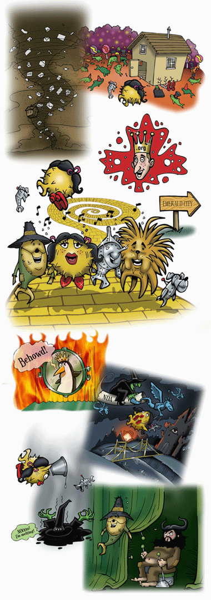
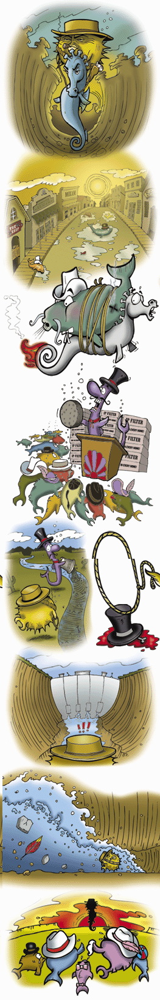
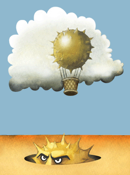
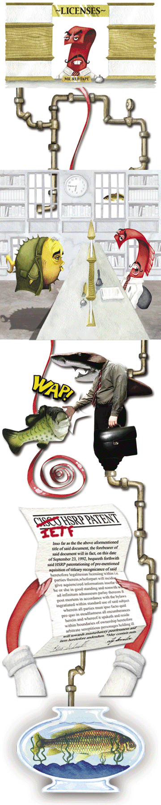
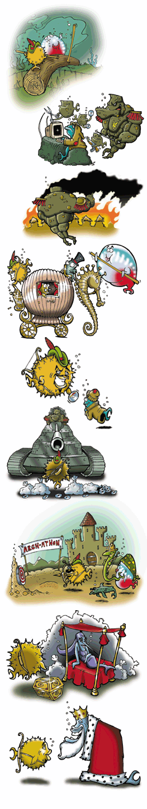
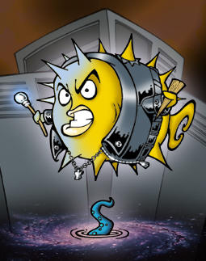

|
[Order OpenBSD 3.7 or other items] OpenBSD 3.7 CD2 track 2 is an uncompressed copy of this song. MP3 version of song (10:08 minutes, 18MB) OGG version of song (10:08 minutes, 13MB) 
For an operating system to get anywhere in "the market" it must have good device support. Ethernet was our first concern. Many vendors refused to supply programmers with programming documentation for these chipsets. Donald Becker (Linux) and Bill Paul (FreeBSD) changed the rules of the game here: They wrote drivers for the chipsets that they could get documentation for, and as they succeeded in writing more and more drivers, eventually closed vendors slowly opened up until most ethernet chipset documentation was available. Today, some vendors still resist releasing ethernet chipset documentation (ie. Broadcom, Intel, Marvell/SysKonnect, nVidia) but the driver problem is mostly solved in the ethernet market. Similar problems have happened in the SCSI, IDE, and RAID markets. Again, the problem was solved by writing drivers for documented devices first. If the free software user communities use those drivers preferentially, it is a market loss for the secretive vendors. Another approach that has worked is to publish email addresses and phone numbers for the marketing department managers in these companies. These email campaigns have worked almost every time. The new frontier: 802.11 wireless chipsets. Over the last six months, this came to a head in the OpenBSD project. We asked our users to help us petition numerous vendors so that we could get chipset documentation or redistributable firmware. Certainly, we did not succeed for some vendors. But we very well influenced some vendors, in particular the Taiwanese (Ralink and Realtek), who have given us everything we need. We also reverse engineered the Atheros chipsets. Want to help us? Avoid Intel Centrino, Broadcom, TI, or Connexant PrismGT chipsets. Heck, avoid buying even regular old pre-G Prism products, to send a message. If you can, buy 802.11 products using chips by Realtek, Ralink, Atmel, ADMTek, Atheros. Our manual pages attempt to explain which vendors (ie. D-Link) box which chipsets into product. Send a message that open support for hardware matters. A vendor in Redmont largely continues their practices because they get the chipset documentation years before everyone else does. What really upsets us the most is that some Linux vendors are signing Non-Disclosure Agreements with vendors, or contracts that let them distribute firmwares. Meanwhile both Linux and FSF head developers are not asking their commnities to help us in our efforts to free development information for all, but are even going further and telling their development communities to not work with us at pressuring vendors. It is ridiculous. |
|
The heroine is deaf to her device her uncles on the farm, send out the alarm and the shit storm flies E-maelstrom is lifting up the house With Puffathy inside, twisting up a ride to the land of OS Hard landing, the packets celebrate The wicked lawyers dead The open slippers red are Hers to take Ding dong the lawyers dead You're off to see the Wizard kid The north witch instructed Puffathy To get yourself back home Take this yellow road and You'll be fine Believe in the open ruby shoes Now go to see the Wiz and give Taiwan your biz You'll never lose The 3 friends she made along the way Were nice but pretty lame, lazy and insane but they sang OK Ding dong the lawyers dead You're off to see the Wizard kid Finally we're through the trees The city glows It's positively green Pompously the wizard booms He wants the broom of triple 'w' Go to the west You must pass the test For me Bring me the ride of the witch I despise And you'll be free You don't need the broom You don't need the shoes You don't need the wiz You will never lose You have all you need You always had heart You always had courage Did somebody fart? You always had brains You answered each call And this may surprise But you've got some balls So double click heels and work with Taiwan And speak to your doggie You're already gone.... |
 |
Lyrics and vocal melody written by Ty Semaka.
Main vocals by Jonathan Lewis, sung female vocals by Adele Legere,
Puffathy (little girl voice) by Anita Miotti, monkeys and laughing by Ty
Semaka,
guitar by Reed Shimozawa, drums, bass and all other sounds programmed by
Jonathan Lewis. Co-Arranged by Ty Semaka & Jonathan Lewis.
Recorded, mixed and mastered by Jonathan Lewis at Moxam Studios
(1-403-233-0350).
|
[Order OpenBSD 3.6 or other items] OpenBSD 3.6 CD2 track 2 is an uncompressed copy of this song. MP3 version of song (4:00 minutes, 7.7MB) OGG version of song (4:00 minutes, 5.2MB) 
What is up with some free software providers?! They say "Here's something free! Oh wait, I changed my mind." While not exactly bait-and-switch, this is something which has been causing the community continual grief, and therefore we decided to honour a few of the projects that have decided to go non-free. After all.. having gone non-free, no one is going to remember them in the end. This song is dedicated to a few worthy groups who have made this Free-to-Non-Free transition with their offerings in the last few years:
|
|
Well he rode from the ocean far upstream Nuthin' to his name but a code and a dream Lookin' for the legendary inland sea Where the water was deep n' clean n' free
But the town he found had suffered a blow
So Puff made a brand and he tanned his hide
But it didn't take long 'fore the filter plugged
Then he found the Mayor was addin' the crud!
So he rolled up-gulch till he hit the lake
I'll hang a lickin' on every one
That's right! |
 |
Vocals, Lyrics, Melody and Co-Arrangement by Ty Semaka - Guitar by
Chantal Vitalis - Bass by Jonny Nordstrom - Drums by John McNiel,
Fiddle - Co-Arrangement, Recording, Mixing, Mastering by Jonathan Lewis of
Moxam Studios (1-403-233-0350).
|
[Order OpenBSD 3.5 or other items] OpenBSD 3.5 CD2 track 2 is an uncompressed copy of this skit & song. MP3 version of song (5:21 minutes, 9.7MB) OGG version of song (5:21 minutes, 6.8MB)  A common theme used by the comedy crew Monty Python was to emphasize and exaggerate ridiculousnesses that their target had imposed upon themselves. Few things could be considered as humorous as making a redundancy protocol... redundant; e.g. being forced to replace it by Cisco lawyers and IETF policy. We've been working a few years now on our packet filtering software pf(4) and it became time to add failover. We want to be able to set up pf firewalls side by side, and exchange the stateful information between them, so that in case of failure another could take over 'keep state' sessions. Our pfsync(4) protocol solves this problem. However, on both sides of the firewall, it is also necessary to have all the regular hosts not see a network failure. The only reliable way to do this is for both firewall machines to have and use the same IP and MAC addresses. But the only real way to do that is to use multicast protocols. The IETF community proposed work in this direction in the late 90's, however in 1997 Cisco informed them that they believed some of Cisco's patents covered the proposed IETF VRRP (Virtual Router Redundancy Protocol); on March 20, 1998 they went further and specifically named their HSRP "Hot Standby Router Protocol" patent. Reputedly, they were upset that IETF had not simply adopted the flawed HSRP protocol as the standard solution for this problem. Despite this legal pressure, the IETF community forged ahead and published VRRP as a standard even though there was a patent in the space. Why? There was much deliberation at all levels of the IETF, and unfortunately for all of us the politicians within eventually decided to allow patented technology in standards -- as long as the patented technology is licensed under RAND (Reasonable And Non Discriminatory) terms. As free software programmers, we therefore find ourselves in the position that these RAND standards must not be implemented by us, and we must deviate from the standard. We find all this rather Unreasonable and Discriminatory and we *will* design competing protocols. Some standards organization, eh? Due to some HSRP flaws fixed by VRRP and for compatibility with the (HSRP-licensed) VRRP implementations of their competitors, Cisco in recent times has largely abandoned HSRP and now relies on VRRP instead -- a protocol designed for and by the community, but for which they claim patent rights. On August 7 2002, after many communications, Robert Barr (Cisco's lawyer) firmly informed the OpenBSD community that Cisco would defend its patents for VRRP implementations -- meaning basically that it was impossible for a free software group to produce a truly free implementation of the IETF standard protocol. Perhaps this is because Cisco and Alcatel are currently engaged in a pair of patent lawsuits; a small piece of which is Cisco attempting to use the HSRP patent against Alcatel for their use of VRRP. Some IETF working group members took note of our complaints, however an attempt in April 2003 to have the IETF abandon the use of patented technology failed to "reach consensus" in the IETF. A few years ago, the W3C, who designs our web protocols, tried to move to a RAND policy as well (primarily because of pressure from Microsoft and Apple), but the community outrage was so overpowering that they backed down. Some standards groups use this policy, while others avoid it -- the one differentiation being the amount of corporate participation. In the IETF, the pro-RAND agents work for AT&T, Alcatel, IBM, Cisco, Microsoft, and other large companies. Since IETF is an open forum, they can blend in as the populace, and vote just like all others, except against the community. Translation: In failing to "reach consensus", the companies who benefit from RAND won, and the community lost again. Left with little choice, we proceeded to reinvent the wheel or, more correctly, abandon the wheel entirely and go for a "hovercraft". We designed CARP (Common Address Redundancy Protocol) to solve the same problem that these other protocols are designed for, but without the same technological basis as HSRP and VRRP. We read the patent document carefully and ensured that CARP was fundamentally different. We also avoided many of the flaws in HSRP and VRRP (such as an inherent lack of security). And since we are OpenBSD developers, we designed it to use cryptography. The combination of pf(4), pfsync(4), and carp(4) has permitted us to build highly redundant firewalls. To date, we have built a few networks that include as many as 4 firewalls, all running random reboot cycles. As long as one firewall is alive in a group, traffic through them moves smoothly and correctly for all of our packet filter functionality. Cisco's low end products are unable to do this reliably, and if they have high end products which can do this, you most certainly cannot afford them. As a final note of course, when we petitioned IANA, the IETF body regulating "official" internet protocol numbers, to give us numbers for CARP and pfsync our request was denied. Apparently we had failed to go through an official standards organization. Consequently we were forced to choose a protocol number which would not conflict with anything else of value, and decided to place CARP at IP protocol 112. We also placed pfsync at an open and unused number. We informed IANA of these decisions, but they declined to reply.
This ridiculous situation then inspired one of our developers to create
this parody of the well-known Monty Python skit and song.
|
|
Customer: Hello, I would like to buy a CARP license please. Licenser: A what? Customer: A license for my network redundancy protocol, CARP. Licenser: Well, it's free isn't it? Customer: Exactly, the protocol's name is CARP. CARP the redundancy protocol. Licenser: What? Customer: He is an.... redundancy protocol. Licenser: CARP is a free redundancy protocol! Customer: Yes, I chose it out of three, I didn't like the others, they were all too... encumbered. And now I must license it! Licenser: You must be a looney. Customer: I am not a looney! Why should I be tied with the epithet looney merely because I wish to protect my redundancy protocol? I've heard tell that Network Associates has a pet algorithm called RSA used in IETF standards, and you wouldn't call them a looney; Geoworks has a claim on WAP, after what their lawyers do to you if you try to implement it. Cisco has two redundant patents, both encumbered, and Cadtrack has a patent on cursor movement! So, if you're calling the large American companies that fork out millions of dollars for the use of XOR a bunch of looneys, I shall have to ask you to step outside! Licenser: Alright, alright, alright. A license. Customer: Yes. Licenser: For a free redundancy protocol? Customer: Yes. Licenser: You are a looney. Customer: Look, it allows for bleeding redundancy doesn't it? Cisco's got a patent for the HSRP, and I've got to get a license for me router VRRP. Licenser: You don't need a license for your VRRP. Customer: I bleeding well do and I got one. It can't be called VRRP without it. Licenser: There's no such thing as a bloody VRRP license. Customer: Yes there is! Licenser: Isn't! Customer: Is! Licenser: Isn't! Customer: I bleeding got one, look! What's that then? Licenser: This is a Cisco HSRP patent document with the word "Cisco" crossed out and the word "IETF" written in in crayon. Customer: The man didn't have the right form. Licenser: What man? Customer: Robert Barr, the man from the redundancy detector van. Licenser: The looney detector van, you mean. Customer: Look, it's people like you what cause unrest. Licenser: What redundancy detector van? Customer: The redundancy detector van from the Monopoly of Cizzz-coeee. Licenser: Cizzz-coeee? Customer: It was spelt like that on the van. I'm very observant! I never seen so many bleeding aerials. The man said that their equipment could pinpoint a failover configuration at 400 yards! And my Cisco router, being such a flappy bat, was a piece of cake. Licenser: How much did you pay for that? Customer: Sixty quid, and twenty grand for the PIX. Licenser: What PIX? Customer: The PIX I'm replacing! Licenser: So you're replacing your PIX with free software, and yet you want to license it? Customer: There's nothing so odd about that. I'm sure they patented this protocol too. After all, the IETF had a hand in it! Licenser: No they didn't! Customer: Did! Licenser: Didn't! Customer: Did, did, did and did! Licenser: Oh, all right. Customer: Spoken like a gentleman, sir. Now, are you going to give me a CARP license? Licenser: I promise you that there is no such thing. You don't need one. Customer: In that case, give me a Firewall License. Licenser: A license? Customer: Yes. Licenser: For your firewall? Customer: No. Licenser: No? Customer: No, half my firewall. It had an accident. Licenser: You're off your chump. Customer: Look, if you intend by that utilization of an obscure colloquialism to imply that my sanity is not entirely up to scratch, or indeed to deny the semi-existence of my little half firewall, I shall have to ask you to listen to this! Take it away CARP the orchestra leader! A zero... one.. A one zero one one VRRP, philosophically, must ipso facto standard be But standard it needs to be free vis a vis the IETF you see? But can VRRP be said to be or not to be a standard, see, when VRRP can not be free, due to some Cisco patentry.. Singing... La Dee Dee, 1, 2, 3. VRRP ain't free. O P E N B S D CARP is free Is this wretched Cisco-eze let through IETF to mean my firewall must pay legal fees? No! CARP and PF are Free! Fiddle dee dum, Fiddle dee dee, CARP and PF are free. 1 1 2, Tee Hee Hee, CARP and PF are free. My firewall just keeps running, see, bisected accidentally, one summer afternoon by me. Redundancy's good when free. Redundancy must be free. Redundancy must be free. The End Under the Geddy Lee? No, Redundancy must be free! Geddy must be free. |
 |
"CARP License" sketch:
Tony Binns as the Customer, Peter Rumpel as the Licenser.
"Redundancy must be free" song:
Lead vocal by Peter Rumpel, backing vocals by Jonathan Lewis and Ty Semaka.
Piano by Janet Lewis, acoustic guitars by Chantal Vitalis.
Bass and Geddy Lee questioning by Jonathan Lewis.
Lyrics by Bob Beck.
|
[Order OpenBSD 3.4 or other items] OpenBSD 3.4 CD2 track 2 is an uncompressed copy of this song. MP3 version of song (3.5 minutes, 7.0MB) OGG version of song (3.5 minutes, 5.1MB) 
Join Puffy Hood and his Funny Fish as they take on the Sheriff (an unelected leader) and other evil forces of the draconian government!
Two years ago we became involved with the University of Pennsylvania and DARPA, who were funding us to do security research and development .. on things that we were already intending to do. We provided ideas, wrote papers, and deployed cutting-edge technology; DARPA provided finances and reaped a share of the credit, and the University of Pennsylvania acted as a middle-man. We accepted funding based on the promise that our freedom to operate as we wished was unaffected. To us, freedom is more important than funding -- heck, we were dealing with the evil forces of government, and needed to be careful. A few months prior to this release, DARPA suddenly and without warning decided to withdraw that funding; they also aggressively backed out of contractual obligations. Many articles in the press followed regarding this sudden manuevre. Apparently this hoopla happened because an OpenBSD-related article in the Canadian newspaper The Globe & Mail had quoted Theo de Raadt making anti-war statements regarding Iraq and the theft of oil. The only answer given (to major media reporters) by a DARPA spokesperson (Jan Walker) was this: "As a result of the DARPA review of the project, and due to world events and the evolving threat posed by increasingly capable nation-states, the Government on April 21 advised the University to suspend work on the "security fest" portion of the project." That almost toes the line of calling us terrorists! We had lost financial support, but the release of the statement above suddenly made us very happy to be free of any perceived obligation to such crazy people. Since the termination came near natural contract termination (about 4 months remained), less damage than expected was sustained by the project. Sponsors stepped forward and helped us make up the missing funds we needed to run our "Hackathon", and the event proceeded as planned. We even had t-shirts made with "Workstations of Mass Development" artwork for those developers who attended (sorry, they are not for sale). We could not make stories like this up. So instead, we are making up an allegory about it, using the tale of Robin Hood. |
|
Sir Puffy of Ramsay was a wandrin' Through forests of seaweed all alone He had found the crusades were an endless charade So for now he called Nothing Hack home One day he met Little Bob of Beckley Beat him fair on a log-in by staff Clever chums they did find other fish of their kind Thwarting evil with humppa and math Now trouble was a brewin' when the Good King was away The Sheriff came a callin' for the poor to pay With CD's and their freedom for to share online And burning down the village cause he was a slime So Puffy and his buddies took the booty from the rich and turned it into a system to protect poor fish Sent out by Hook or a Wim to the teaming schools Town cryers were on fire cause the crypto ruled! Chorus: They called it "BSD"! And "Open" because it's always free So raise up your glass and three cheers to the Funny Fish for never running and making something good! And here's to Puffy Hood! Aaaw! Word to the sea y'all The Hood's a bad ball Ya underneath he's a heathen and a traitor He can take from you all and say "later!" Think he's a hero? Naw he ain't lovin' ya He gettin' richer than Bill Gates and Dubya Read the Wanted poster of Sheriff Plac-o-derm fool We gettin' back the booty or we take away your worms too Yo! Word to the classes Put on your glasses I guess the Sheriff is King till this passes Times are a changin' and movin' so fast He says "Give me your freedom, I'll grasp it and pass it to brass who can hash it for weapons of massive distraction. And hand me the bastards that brashly amassed from the cash happy faction of oily and gassy co-action". No! Don't hand em dick, grab a stick, keep attacking for freedom and hack till the King cometh back and leave em' Then trouble was a rollin' with an army on the run The Sheriff came a callin' for the spikey one And took back all the booty Puff intended for the poor The Arch-a-thon went on despite the mighty roar Puff snuck into the castle, and found the treasure hill And also found Maid Marlin held against her will He loaded all the loot to give it back and big surprise He took the maiden too, 'cause she was easy on the eyes Chorus: They called it "BSD"! And "Open" because it's always free So raise up your glass and three cheers to the Funny Fish for never running and making something good! And here's to Puffy Hood! |
 |
Music, Co-arrangement, Recording, Mixing, Drum Programming,
Bass, Organ, and Violin by Jonathan Lewis.
Co-Arrangement, Lyrics, and Main Vocals by Ty Semaka.
Back-vocals by Bob Beck, Calvin Beck, Theo de Raadt, Alan Kolodziejzyk,
Jonathan Lewis & Peter Valchev.
Rap #1 by Richard Sixto.
Guitar by Chantal Vitalis.
|
[Order OpenBSD 3.3 or other items] OpenBSD 3.3 CD2 track 2 is an uncompressed copy of this song. MP3 version of song (4 minutes, 7.5MB) OGG version of song (4 minutes, 3.3MB) 
Like other Barbarians before him, Puff has had to face some pretty crazy challenges. This song is an allegory of the recent difficulties we went through dealing with Sun, who refused our request for documentation about their UltraSPARC III processors. We want documentation, because these are the fastest processors with a per-page eXecute bit in the MMU, needed to fully support our new W^X security feature. In the meantime, the AMD Hammer has come onto the scene, and this processor supports an eXecute bit in 64-bit mode. And it is going to be faster... |
Deep through the mists of time Gaze to the crystal ball Back to the age of darkness Black was the protocol
A King ruled the web with fear
Down the sewer pipes of Hell
And there he found
Then in a dream Xor requested he
At the tower Puff appealed
Broke down the guard
Come the Sun King blade ablur |
 |
Written and arranged by Ty Semaka.
Co-arranged, recorded, mixed & mastered by Jonathan Lewis.
Vocals by DeVille, guitar by Sean Desmond, bass by Ian Knox,
drums by John McNiel, violin by Jonathan Lewis.
|
[Order OpenBSD 3.2 or other items] OpenBSD 3.2 CD2 track 2 is an uncompressed copy of this song. MP3 version of song (3 minutes, 2.5MB) OGG version of song (3 minutes, 2.3MB) 
|
Goldflipper With golden skin and flippers as sharp as a knife He's the machine Designed to dismember your life
And the fish
Cyborg on a mission (short instrumental intro)
You'll need some machismo to
But Flip's here for fun
She's all over Puff cause he's
Oh double seven
The women are fond
Goldflipper is gone |
|
Lyrics by Ty Semaka. Arranged by Ty Semaka & Jonathan Lewis.
Base & drum programming, recording, mixing & mastering by
Jonathan Lewis. Vocals by Onalea Gilbertson. Sax by Dan Meichel.
Trumpet & Trombone by Craig Soby.
|
[Order OpenBSD 3.1 or other items] OpenBSD 3.1 CD2 track 2 is an uncompressed copy of this song. MP3 version of song (3 minutes, 2.9MB) OGG version of song (3 minutes, 2.3MB)  |
BSD fight buffer reign Flowing blood in circuit vein Quagmire, Hellfire, RAMhead Count Puffy rip attacker out
Crackin' ze bathroom, Crackin' ze vault
Can't fight the Systemagic
Sexty second, black cat struck |
Crackin' ze boardroom, Crackin' ze vault Chorus
Cybersluts vit undead guts
Crackin' ze bedroom, Crackin' ze vault
Chorus |
Produced & Directed by Ty Semaka and Ian Knox.
Written, Arranged and Performed by Ty Semaka (vocals, lyrics), Ian Knox (bass,
drum programming), and Sean Desmond (guitar).
Recorded & Mixed at Ruffmix Audio Productions (Calgary) by Kelly Mihalicz.
Mastered by Jonathan Lewis.
|
[Order OpenBSD 3.0 or other items] OpenBSD 3.0 CD2 track 2 is an uncompressed copy of this song. MP3 version of song (3 minutes, 2.9MB) OGG version of song (3 minutes, 2.3MB) 
|
Don't tell anyone I'm free Don't tell anyone I'm free
During these hostile and trying times and what-not
I'm secure by default
They that can give up liberty to obtain a little temporary safety
RELEASE TIME!!!!
Stay off, stay off, stay off... |
|
By The Plaid Tongued Devils. Produced & Arranged by Ty Semaka & Wynn Gogol.
Written & Performed by Gordon Chipp Robb (bass line),
John McNiel (drums), Ty Semaka (vocals & lyrics), and Wynn Gogol (programming).
Recorded, Mixed & Mastered by Wynn Gogol of Workshop Recording Studios (Victoria BC).
Check out http://www.thedevils.com
{kind=link}
{kind=link}